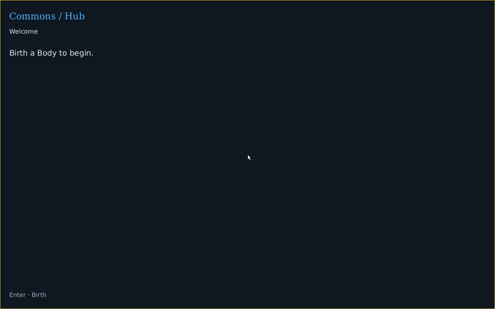
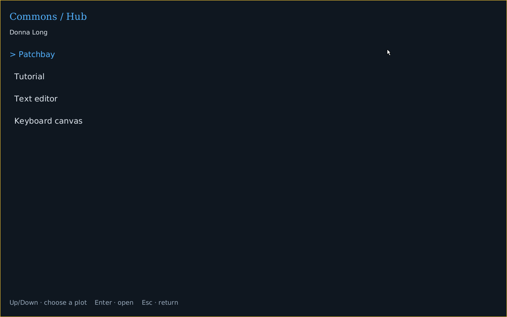
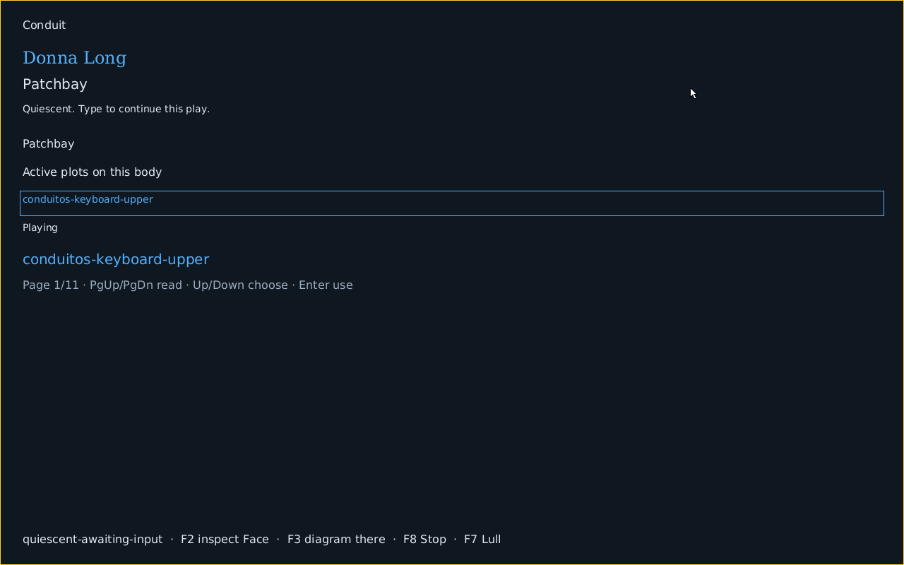
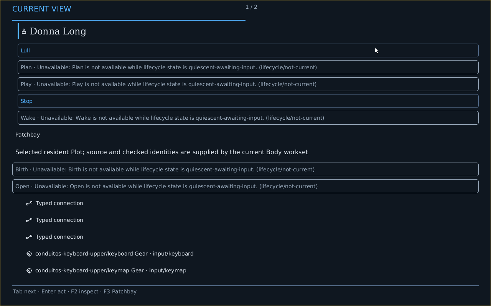
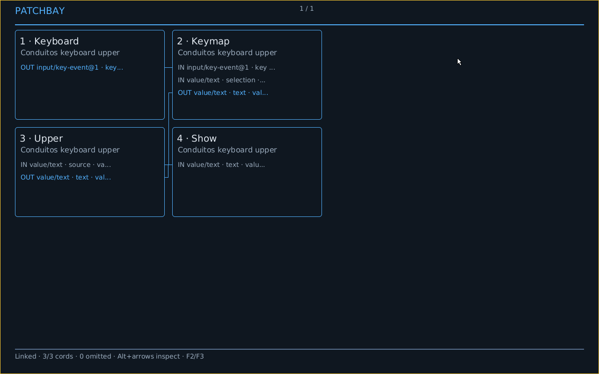
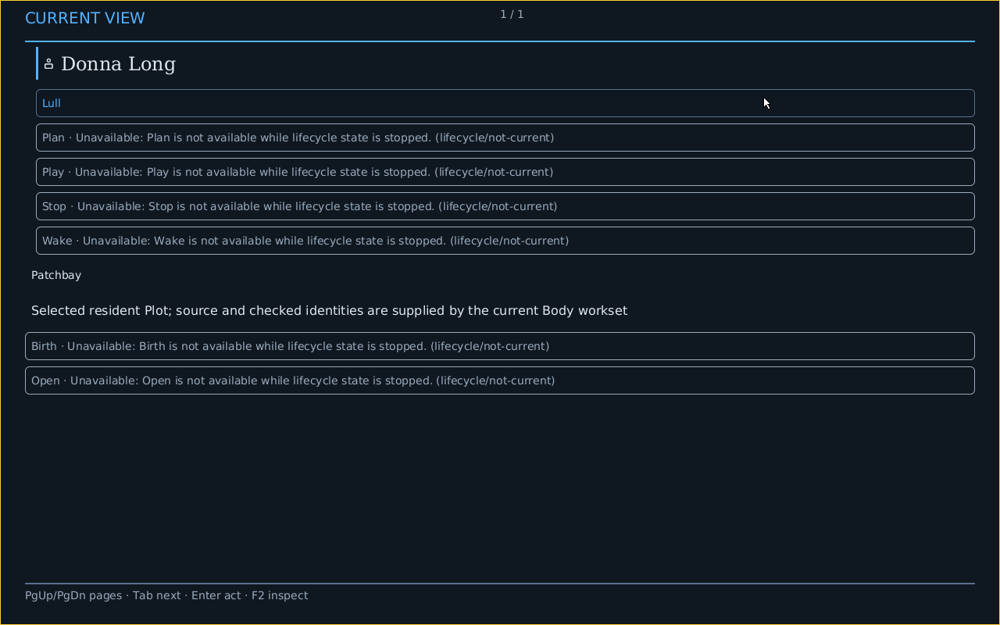

A Body, its Patchbay, and its Face
These images follow keyboard actions in one real ConduitOS x86 guest. The QMP harness captured the display after each guest checkpoint. This is freestanding emulator evidence from a development image; physical and human enactment remain separate.

1. Arrive
Commons Hub offers entry to Birth. Name a Body and choose its installed Plots. No Body exists yet.
2. Birth and start
The user activates Birth once. The retained receipts record separate Birth, Wake, Plan and Play transitions for the same Body. The default startup policy requests each against its current Face and acknowledged Show; the final screen is Commons Hub over the living Body.
3. Go Home
The user opens the active-Plot picker without losing the Body.
4. Open Patchbay
The resident Patchbay is selected from Home.
5. Inspect the Face
F2 presents the current semantic Face through the native Mask.
6. View the diagram
F3 draws the current planned graph from Face subjects and relationships, rather than loading a pre-generated SVG.
7. Stop
The user requests Stop through the Face. The Body stays identified and can be woken again.